FNGS
A One-Click Pipeline for the Automated Acquisition of Functional MRI Connectomes
Created by Eric Bridgeford / Contact: @ebridge2
Summary of Preproc Methods: $^* = $ custom
| Step | FNGS | CPAC | fmriprep |
|---|---|---|---|
| Motion correct | mcflirt (FSL) | Opt/3dvolreg (AFNI) | mcflirt$^*$ (FSL; ANTs) |
| Slicetime correct | slicetimer (FSL) | CPAC $^*$ | 3dTshift (AFNI) |
| EPI Skullstrip | 3dAutomask | 3dAutomask | BET |
| T1w reorient | - | 3dResample | - |
| T1w Skullstrip | 3dSkullstrip$^*$ | 3dSkullstrip$^*$ | ANTs |
| T1w segment | FAST (FSL) | FAST (FSL) | FAST (FSL)/freesurfer |
Summary of Later Methods: $^*=custom$
| Step | FNGS | CPAC | fmriprep |
|---|---|---|---|
| self-register | flirt (trans), flirt (loc), flirt (6dof), flirt (bbr) (FSL) | flirt (6dof), flirt (bbr) (FSL) | freesurfer (bbr)$^*$ (FSL) |
| template-register | flirt (12 dof), FNIRT (MNI conf) (FSL) | FNIRT $^*$ (FSL) | ANTs-nonlinear $^*$ (ANTs) |
| nuisance | quad, CSF-mean, aCompCor, highpass$^*$ | quad, CSF-mean, aCompCor$^*$ | - |
| timeseries | FNGS$^*$ | CPAC$^*$ | - |
| connectome | FNGS$^*$ | - | - |
FNGS effectively Removes Spatial Distortions from EPI Scans

FNGS effectively Removes Spatial Distortions from EPI Scans
- Jaccard Index for CPAC and FNGS between all permutations of motion-corrected volumes 0:20:maxtimepoint

AFNI 3dSkullstrip Enables Robust Brain Extraction
- BET hyperparameters make it difficult to optimally brain extract
bet default AFNI
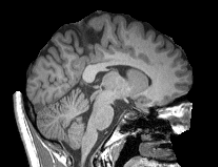
T1w Preprocessing with AFNI Reduces Registration Failures
- Registration Failure: Jaccard score $< 0.7$
- Dataset: SWU4 467 subjects
- Registration Failures with BET: $30$
- Registration Failures with 3dSkullstrip: $15$
FNGS Registers using default EPIreg with better initialization
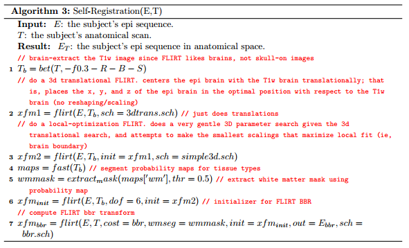Custom initialization prevents overscaling of epireg
epireg only: $.68$ with trans/local: $.76$
 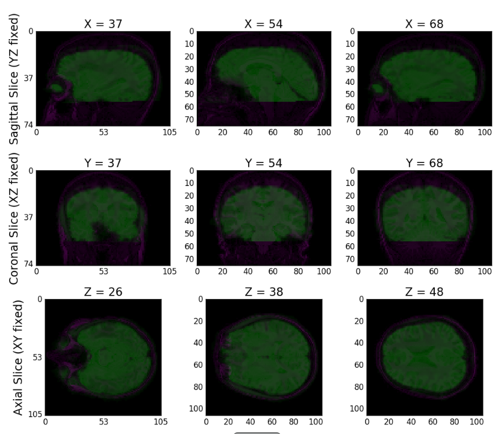
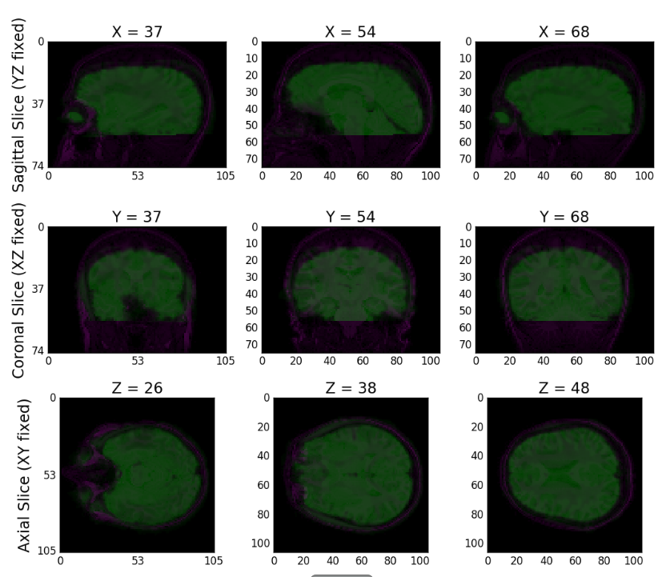
Performing Self Registration with Better Initialization improves Performance
- BNU1
- discriminability improves from .9253 to .9275
- Registration scoring improves from .8012 to .8024
- HNU1
- discriminability score improves from .9500 to .9573
- Average self-registration scoring improves from .809 to .816
FNGS Registers to Template using MNI152 config files
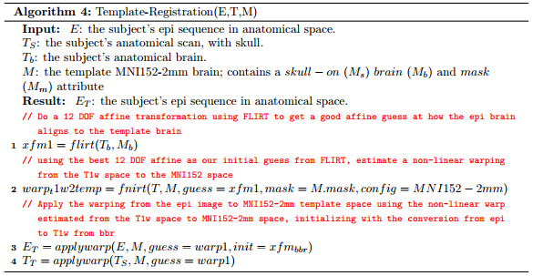FNGS effectively aligns EPI to reference anatomical images
- Jaccard Index for CPAC and FNGS between s0 functional and anatomical template
FNGS: $.86$ CPAC: $.86$
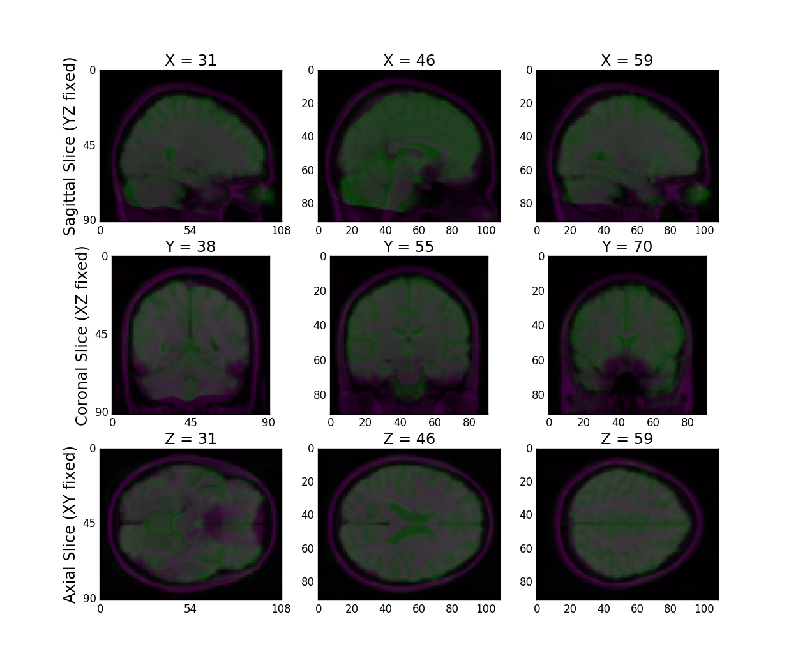
FNGS Registration Effectively Transforms our EPI Inputs to the Template Space
- BNU1
- Registration score average of .861
- HNU1
- Registration Score average of .853
FNGS performs nuisance correction using GLM and hp-filtering

FNGS corrects signal distortions inherent in fMRI
- Friston 24 params (motion); wm aCompCor, CSF mean (physiological); quadratic drift (scanner)

FNGS highpass filters low-frequency drift
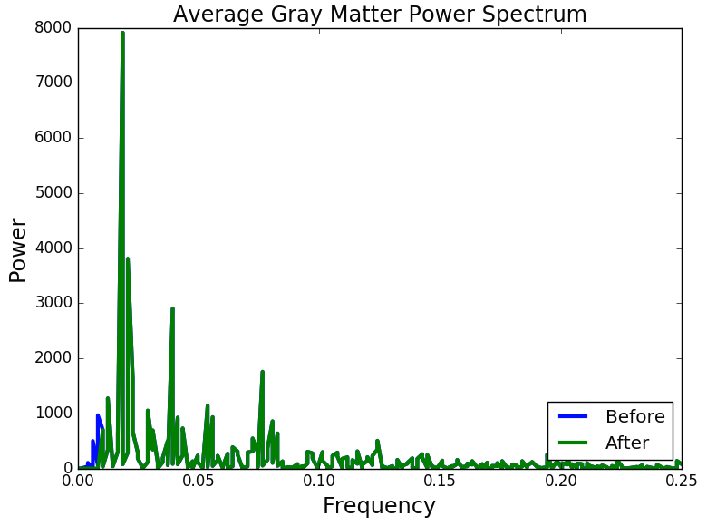
FNGS extracts connectomes using spatial parcellation maps
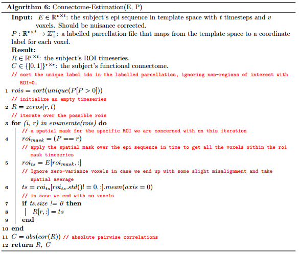FNGS timeseries do not have low-frequency components
- Notice the drifting present in the CPAC timeseries
FNGS CPAC
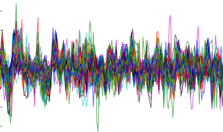 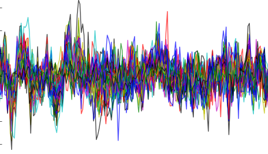FNGS and CPAC produce similar correlational connectome estimations
FNGS CPAC
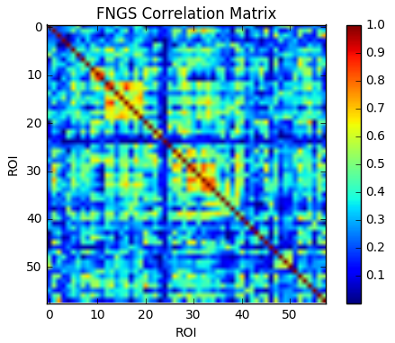 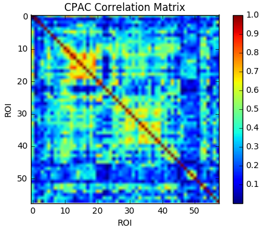FNGS Offers Superior Computational Performance
| Metric | FNGS | CPAC | fmriprep |
|---|---|---|---|
| execution time (s) | 1560 | 3120 | 40000 |
| $RAM_{mx}$ (GB) | 4.3 | 3.5 | 15.1 |
| $RAM_{avg}$ (GB) | 1.0 | 1.7 | 3.6 |
| $CPU_{avg}$ (threads) | 1.15 | 1.33 | 3.81 |
| $Disk$ (GB) | 1.3 | 2.2 | 12.1 |
... Without Sacrificing Robustness

- FNGS: $\bar{d} = .887$, CPAC: $\bar{d} = .889$
- $p=0.87$, not significant
- Note that CPAC fails for 30 more subjects of 8500
Eric provides graphs/qa for greg to have fun with
Use-Cases
| Case | FNGS | CPAC | fmriprep |
|---|---|---|---|
| Resolution | 2 mm | 2, 3, 4 mm | 1 mm |
| QA | glass box | black box | glass box |
| pipeline type | raw - connectome | raw - timeseries | raw - registered |
| workstation | local, EC2, Batch | local, cluster, EC2 | local |
| compute requirements | light | light | heavy |